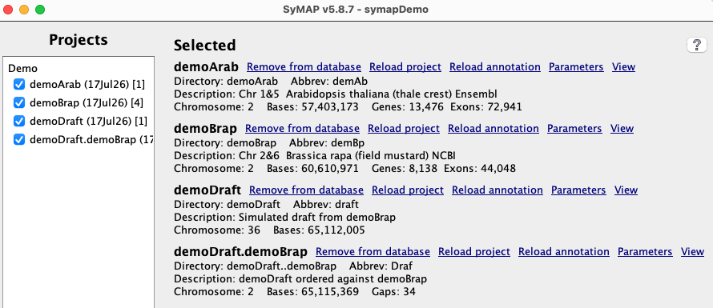
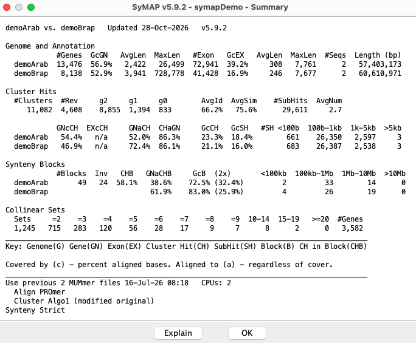
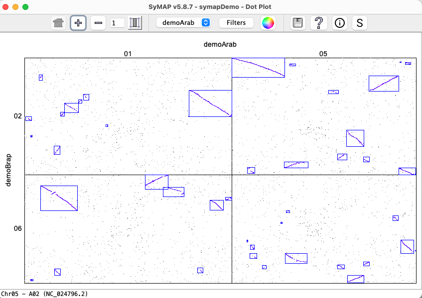
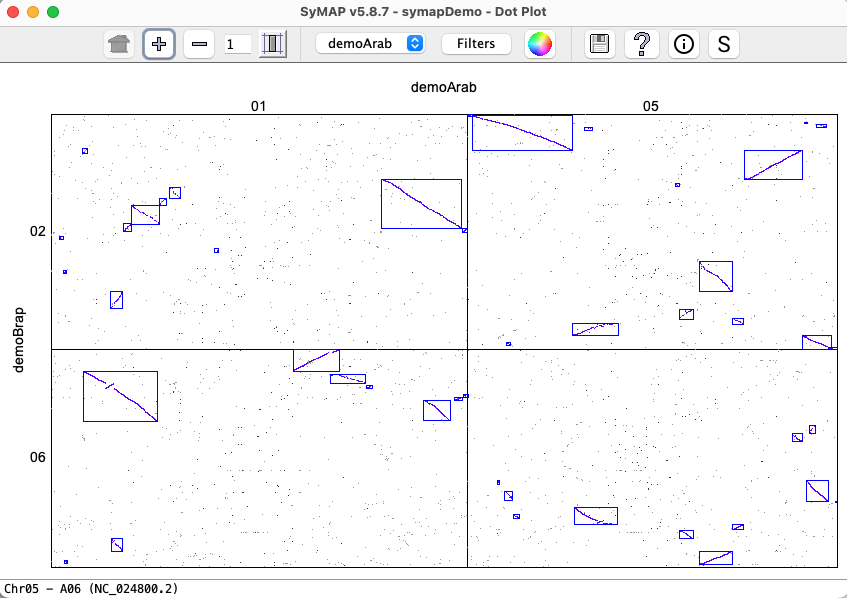
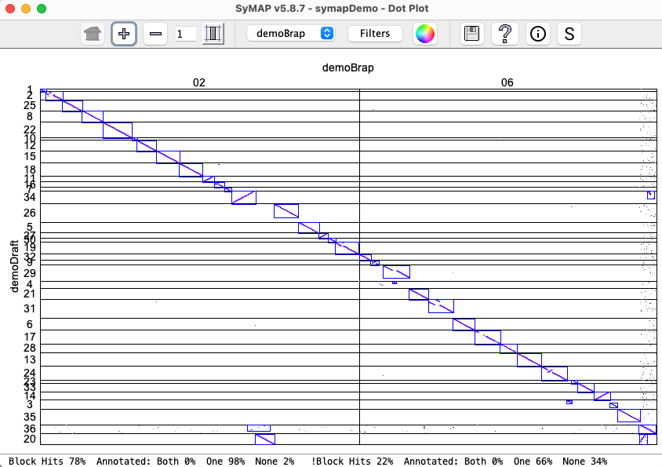
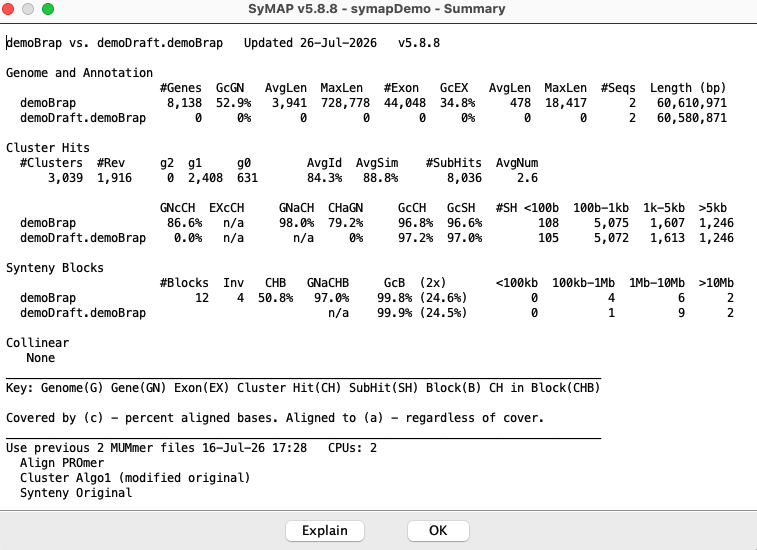
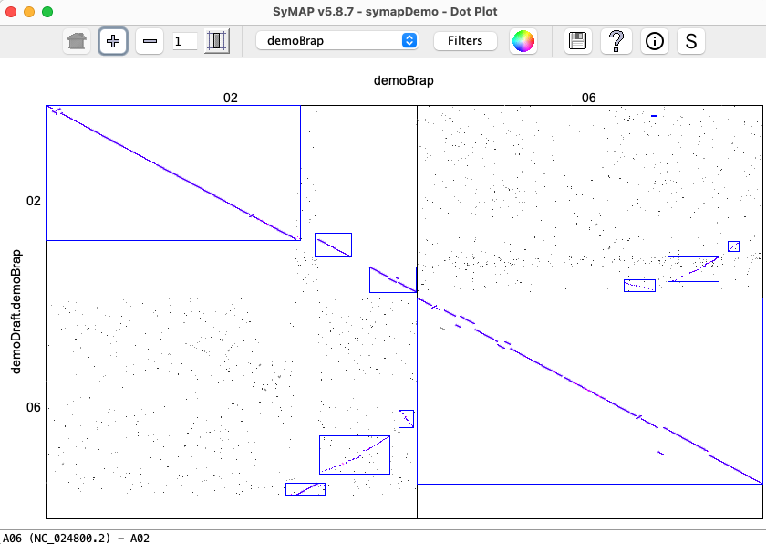
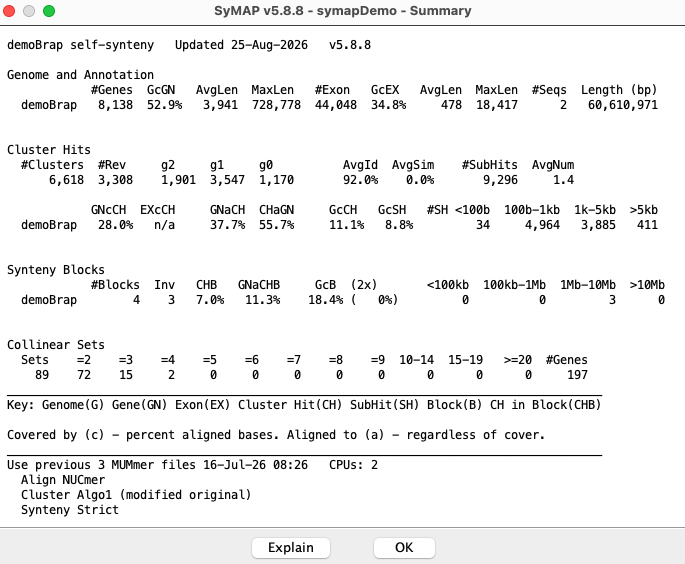
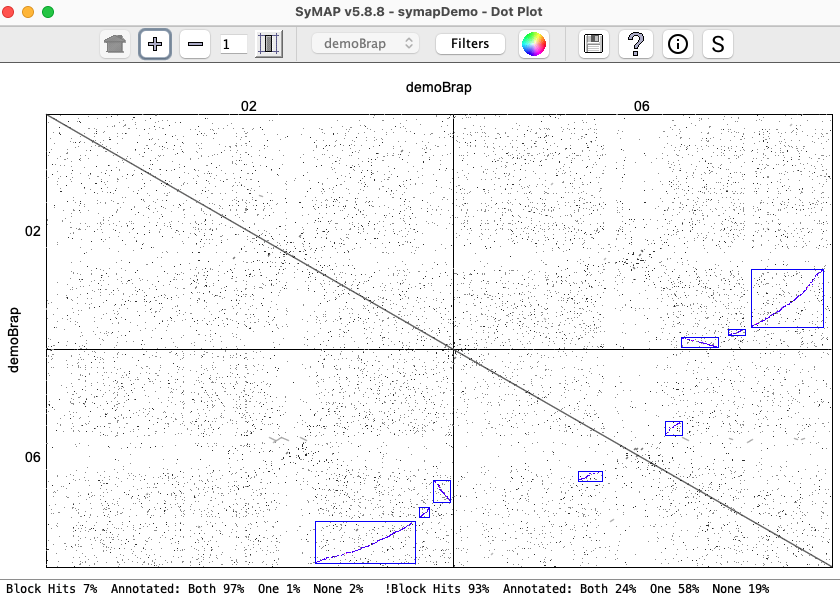

This webpage provides results from the supplied demo, which is used by System Guide.
This demo was created July 2026 using 2 chromosomes from Ensembl Arabipdopsis and 2 from NCBI Brassica rapa. The draft demo is a simulated draft from the 2 chromosome sequences of Brassica rapa.
Demo Results
| Two complete genomes | Draft | Self-synteny | symap.log |
| Click an image to view a closeup. | |
|
The demo that is provided with the SyMAP tarball has the projects
demoArab, demoBrap
and demoDraft.
The project demoDraft.demoBrap was created with ordered contigs, as described in Draft. |
 |

Two complete genomes: demoArab to demoBrap2
This section discusses the demoArab to demoBrap synteny, which represent complete genome sequences.There are a variety of clustering&synteny computation options, as discussed in Pair Parameters. The following shows the Dot Plot and Summary using the following:
- Cluster Algo1 (original modified) or Cluster Algo2 (exon-intron): The second
is recommended when there is good gene annotation provided.
- Synteny Original or Synteny Strict: The second is recommended for complete genome sequence; it does not perform well for draft.
| Cluster Algo1 (original modified) and Synteny Original | |
|
 |
 |
| Cluster Algo2 (exon-intron) and Synteny Strict | |

|
 |
|
There is very little difference between the Dot Plots. The difference in the synteny algorithm are obvious on the more complicated examples, as shown in Synteny Results. | |


Draft: demoDraft to demoBrap
| The demoDraft was run against
the demoBrap with its order_against parameter set to draft->demoBp;
this is explained in the System Guide.
The resulting dot plot is shown on the right. Note that the 36 contigs
are ordered, but still fragmented.
| |

|
 |
| When the ordering algorithm is run, it creates a new project called
demoDraft.demoBrap,
where the 36 contigs are written into three chromosomes; the first two correspond
to chr02 and chr06 of demoBrap. If there were
any contigs that do not align, they would be assigned to chr0.
The new project demoDraft.demoBrap was aligned with demoBrap, resulting in the dot plot shown on the right. | |
|
 |
 |


Self-synteny: demoBrap
| demoBrap has been run against itself. The blocks below the diagonal are mirrored above the diagonal, e.g. 02.06.3 and 06.02.3 are the same. | |
|
 |
 |


symap.log
The following 4 sections show the contents of the logs/<proj-to-proj>/symap.log file:
| Algo1 !verbose | Algo1 verbose | Algo2 !verbose | Algo2 verbose | Go to top |
Pair Parameters
Use MUMmer files 16-Jul-26 08:18 PROmer
Cluster Algo1 (exon-intron)
Synteny Original
Use existing 2 MUMmer files
--If not correct, remove data/seq_results/demoArab_to_demoBrap and re-align
Start calculating cluster hits for demoArab and demoBrap
Alignment files in data/seq_results/demoArab_to_demoBrap/align/
Scan files to create candidate genes from hits
35,073 Total scanned hits from 2 files
Scan files to cluster and filter hits
15,528 Total cluster hits
11,082 Filtered hits to save
Finding Collinear sets
1,245 Collinear sets
Finish clustering hits 13s
Finding synteny for demoArab and demoBrap
49 Blocks
Finish Synteny 7s
Algo1 verbose
Using same settings as above.
Start calculating cluster hits for demoArab and demoBrap
Alignment files in data/seq_results/demoArab_to_demoBrap/align/
Loading annotations
13,476 demoArab genes
8,138 demoBrap genes
Scan files to create candidate genes from hits
1. 18,012 scanned PROMER demoArab_c1.demoBrap_f1.mum
2. 17,061 scanned PROMER demoArab_c1.demoBrap_f2.mum
35,073 Total scanned hits from 2 files
Scan files to cluster and filter hits
1. 8,054 clustered demoArab_c1.demoBrap_f1.mum
2. 7,474 clustered demoArab_c1.demoBrap_f2.mum
15,528 Total cluster hits
Filter hits
13,104 for demoArab
12,085 for demoBrap
11,082 Filtered hits to save
Save results
Save filtered hits 11,082
Save hit to gene
10,249 (10,139) for demoArab
10,249 (20,326) for demoBrap
Finding Collinear sets
1,245 Collinear sets
820 !Inverted 425 Inverted
10,854 Gene Overlap 1,446 Embedded
0 Merge Sets 32 Remove 2-Hit Sets
3,582 Collinear hits
Finish Collinear 1s
Finish clustering hits 13s
Finding synteny for demoArab and demoBrap
11,082 Total hits
4 group-x-group pairs to analyze
12 Blocks Chr01-A02 Orient: Same 5 Diff 7
9 Blocks Chr01-A06 Orient: Same 6 Diff 3
16 Blocks Chr05-A02 Orient: Same 8 Diff 8
12 Blocks Chr05-A06 Orient: Same 6 Diff 6
49 Blocks
11 Collinear Sets not in blocks (23 total hits)
Finish Synteny 5s
Algo2 !verbose
Pair Parameters
Use MUMmer files 16-Jul-26 08:18 PROmer
Cluster Algo2 (exon-intron)
Synteny Strict
Use existing 2 MUMmer files
--If not correct, remove data/seq_results/demoArab_to_demoBrap and re-align
Start calculating cluster hits for demoArab and demoBrap
Alignment files in data/seq_results/demoArab_to_demoBrap/align/
Final totals Raw hits 35,073 Files 2
8,149 Clusters Both genes 7,404 One gene 380 No gene 365
9,644 Filtered Both genes 4,170 One gene 3,675 No gene 1,799 Pile hits 497
Finding Collinear sets
1,151 Collinear sets
Finish clustering hits 12s
Finding synteny for demoArab and demoBrap
45 Blocks
Finish Synteny 4s
Algo2 verbose
Using same settings as above.
Start calculating cluster hits for demoArab and demoBrap
Alignment files in data/seq_results/demoArab_to_demoBrap/align/
Load genes for Algo2
demoBrap [Avg Min Max] [Gene 3,941 206 729k] [Intron 294 1 518k] [Exon 478 2 18k] Cov 65.7%
demoArab [Avg Min Max] [Gene 2,423 3 26k] [Intron 163 10 7,384] [Exon 308 2 7,761] Cov 68.9%
Load demoArab_c1.demoBrap_f1.mum Hits 18,012 (EQ 11,335 NE 6,677)
1,499 Clusters Chr01-A02 Both genes 1,337 One gene 73 No gene 89
2,605 Clusters Chr05-A02 Both genes 2,410 One gene 98 No gene 97
Load demoArab_c1.demoBrap_f2.mum Hits 17,061 (EQ 10,066 NE 6,995)
2,317 Clusters Chr01-A06 Both genes 2,120 One gene 105 No gene 92
1,728 Clusters Chr05-A06 Both genes 1,537 One gene 104 No gene 87
Final totals Raw hits 35,073 Files 2
8,149 Clusters Both genes 7,404 One gene 380 No gene 365
9,644 Filtered Both genes 4,170 One gene 3,675 No gene 1,799 Pile hits 497
Finding Collinear sets
1,151 Collinear sets
766 !Inverted 385 Inverted
10,854 Gene Overlap 1,446 Embedded
9 Merge Sets 22 Remove 2-Hit Sets
3,269 Collinear hits
Finish Collinear 1s
Finish clustering hits 11s
Finding synteny for demoArab and demoBrap
8,149 Total hits
4 group-x-group pairs to analyze
11 Blocks Chr01-A02 Orient: Same 5 Diff 6
9 Blocks Chr01-A06 Orient: Same 6 Diff 3
14 Blocks Chr05-A02 Orient: Same 8 Diff 6
11 Blocks Chr05-A06 Orient: Same 6 Diff 5
45 Blocks
7 Collinear Sets not in blocks (14 total hits)
Finish Synteny 4s
| Go to top |
Email Comments To: cas1@arizona.edu